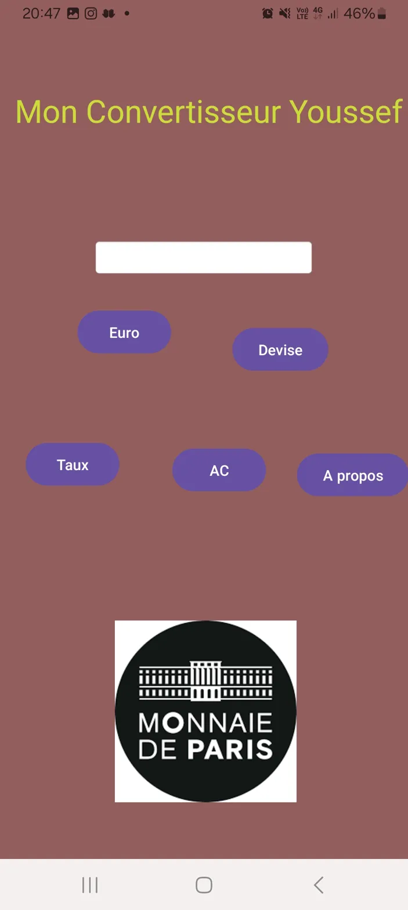

Mon Convertisseur est ma première application Android permettant de convertir des montants en Euros vers d'autres devises. Réalisée en cours dans le cadre de ma formation, elle propose une interface claire avec des boutons dédiés : Euro, Devise, Taux et AC. Le montant saisi est converti en temps réel selon le taux de change configuré par l'utilisateur. Le projet m'a permis de maîtriser la gestion des événements, la logique de calcul en Java et la conception d'interfaces XML sous Android Studio.